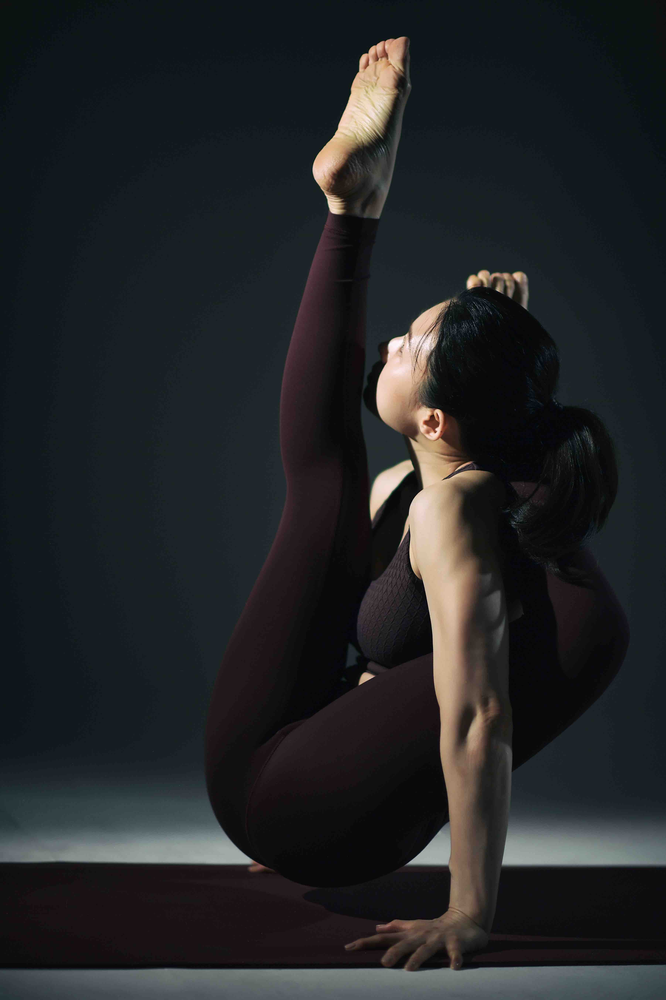

Our Teachers
강사 소개
Tristhana Yoga의 강사진은 각자의 전문 수련 영역을 바탕으로 수련자 개개인에게 맞는 아쉬탕가 지도를 제공합니다.

하영수
Youngsoo Ha
SYC Authorized Level II 자격 보유. Advanced 수련. 2012년부터 인도 마이소르에서 수련을 이어오고 있으며, Tristhana Yoga 원장으로 새벽 마이소르 클래스를 담당합니다.
@youngsoo.tristhana_yoga김지원
Jiwon Kim
SYC Authorized Level II 자격 보유. Advanced 수련. 2019년부터 인도 마이소르에서 수련을 이어오고 있으며, Tristhana Yoga 부원장으로 오전 마이소르 및 저녁 마이소르 클래스를 담당합니다.
@piaf0777정다감
Dagam Jung
2021년부터 마이소르 수련 중. Intermediate Series 수련. 주말 수업 및 명상 수업을 담당합니다.
@dg.j_나순화
Sunwha Na
2021년부터 마이소르 수련 중. Intermediate Series 수련. 김동진 아쉬탕가 프라이머리 워크샵 및 트리스타나요가 기능 해부학 워크샵 참가. 점심 수업을 담당합니다.
강수민
Sumin Kang
2023년 마이소르 수련중. Intermediate Series 수련. 24년 Sarath Jois New York Workshop 및 25년 Ashtanga Yoga Bali Research Center에서 Ashtanga Yoga Teacher and Lifestyle Workshop 참가. 점심 수업 및 주말 수업을 담당합니다.
@purewatersumin김예성
Yesung Kim
2018년부터 마이소르 수련 중. Intermediate Series 수련. 요가원의 실장으로 요가원 운영 전반을 관리합니다.